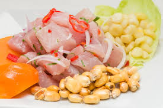
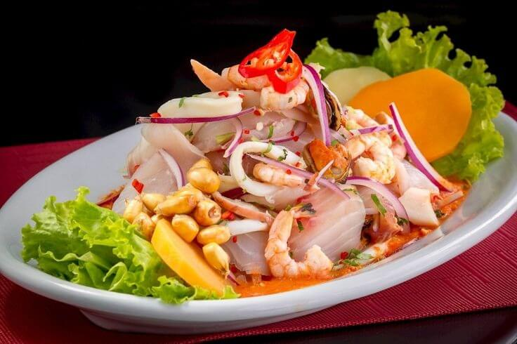
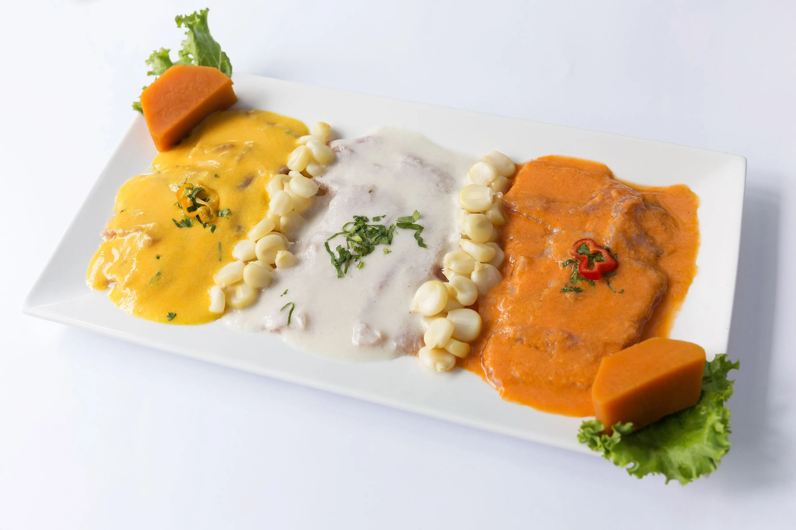
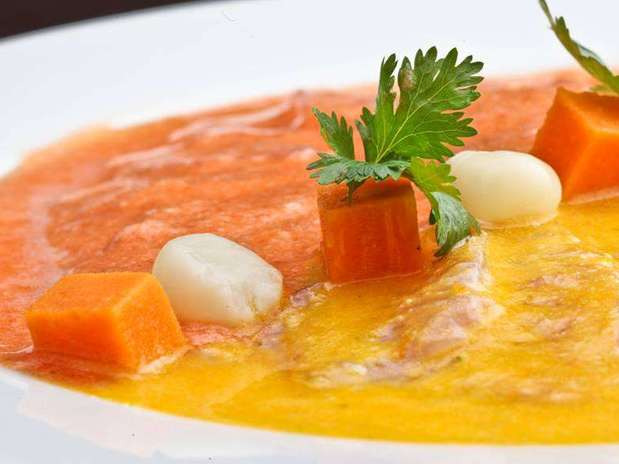
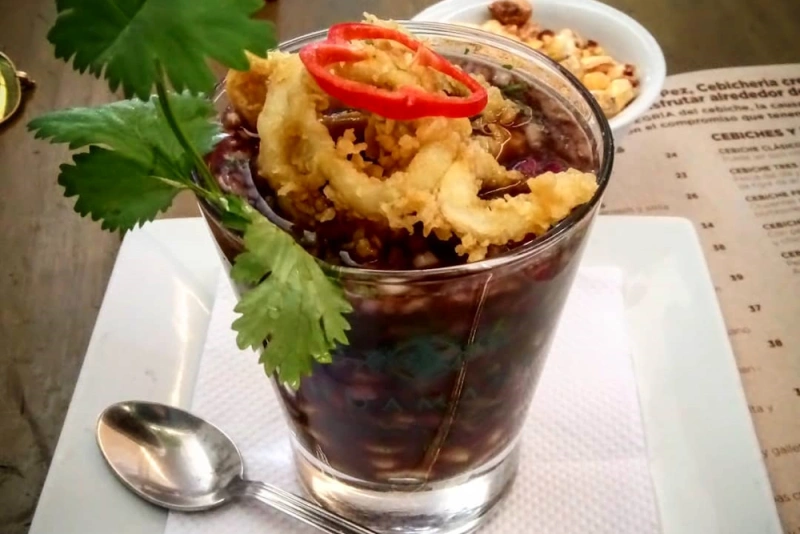
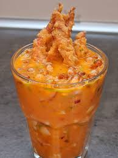
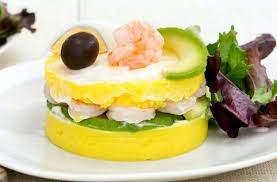
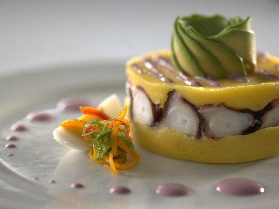

PLATOS FRIOS
|
 |
CEVICHE DE PESCADO |
| 24.90 | |
| Deliciosos trozos de pescado marinados en jugo de limon y aromatizados con culantro y aji limo. |
|
 |
CEVICHE DE MARISCOS |
| 28.90 | |
| deliciosos trozos de pescado y selectos mariscos marinados en jugo de limon y aromatizados con culantro y aji limo. |
|
 |
IRADITO TRICOLOR |
| 27.90 | |
| laminas finas de fresco pescado marinados en limon y sal y bañados en 3 salsas rocoto,aji amarillo y al natural |
|
 |
TIRADITO BICOLOR |
| 26.90 | |
| Laminas finas de fresco pescado marinados en limon y sal y bañados en 2 salsas rocoto y aji amarillo |
|
 |
LECHE DE PANTERA |
| 22.90 | |
| Esencia de las conchas negras en su propio jugo |
|
 |
LECHE DE TIGRE EN CREMA DE ROCOTO |
| 23.90 | |
| La leche de tigre clasica pero con crema de rocoto |
|
 |
CAUSA DE LANGOSTINOS |
| 25.90 | |
| Masa de papa al aji amarillo y limon coronada con langostinos en salsa acevichada. |
|
 |
CAUSA DE PULPO AL OLIVO |
| 25.90 | |
| Masa de papa al aji amarillo y limon coronada con pulpo al olivo |